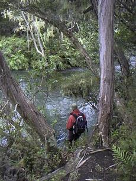
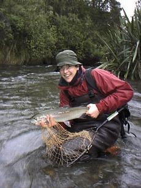
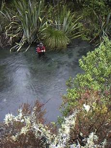
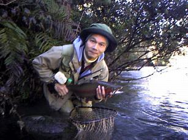

エッセイ
ベルギーから来たセバスチャン
ある日、ヒックス教授が、ベルギーから来た短期の留学生だと言って一人の青年を紹介してくれた。ゴウは釣り好きだから話が合うぞと言う。話をしてみると、彼はセバスチャンという名で、自然界の魚に含まれる有害化学物質の研究をしており、南半球の魚のサンプルを採捕しにニュージーランドへ来たのだそうだ。一介の大学生の研究にしてはスケールの大きな話だなぁと思って聞いてみると、彼の父君は外交官であり、現在駐ニュージーランド大使としてウェリントンに赴任しているとのことだった。
数週間ほどお互いの研究を続けた後、学食のカフェで話をしている時に、冬のトンガリロへ遡上鱒を釣りに行こうという話がまとまった。その時まだ車を持っていなかったので、彼の滞在している寮に早朝まだ暗いうちに迎えに行った。一抱えの釣り道具とともに乗り込んで来たセバスチャンは、
「さぁ、行こうぜ！」
と静かに笑った。
ハミルトンからタウポまでの３時間のドライブの後、釣り場についたのはまだ明け方で、2人はいそいそとウェーダ－を履き、ロッドをセットして岸辺へと歩き出した。その時の私は、タウポ周辺の川で遡上鱒を釣るのはまったく経験がなく、セバスチャンが釣り場を選んでくれ、釣り方も教えてくれた。スプリングクリークのその川はだいぶ増水しており、どこがポイントだかさっぱりつかめなかった。川沿いに林道が走っており、林道を歩きながら竿を出せるポイントで釣り、また歩いて上流へ向かって竿を出せるポイントを探すという釣り方がその日の彼の戦法だった。

セバスチャンもまだそれほどこの川を熟知してはいないはずだったが、彼の指摘は実に的確であり、そこここでアタリがある。彼が薦めてくれたゆるいカーブの内側のちょっとしたよどみで、釣り始めてすぐ１尾掛けることができた。まずまずの大きさのオスだった。
さらに釣り上がると、薮に囲まれた小さな淵に長瀬が続いているポイントに出た。セバスチャンはその長瀬の片側の深みを丁寧に釣り、彼のマーカーがすいっと消えた。すかさずの合わせとともにかなりの大きさの鱒がジャンプした。６ポンドはありそうなメスであった。増水でどこもかしこも急流となっている長瀬で、セバスチャンは見事にロッドを操ってそのメスをランディングした。

「ここは、帰りに釣ればまた釣れるよ」
彼はそう言って、また釣り始め、薮の下の小さな淵からまた１尾を掛けた。
「君は本当にうまいなぁ」
「ありがとう。でもまぐれ半分さ」
また彼は静かに微笑んだ。
なおもどんどんと釣りあがり、左側にゆるい深みが続くポイントに出た。
「あの深みにはきっと居着いているぜ」
彼がロッドで指し示した方向へ重いニンフをよいしょっとキャストし、オレンジ色の特大マーカーが流れに乗って漂い出す。3分の２ほど流した時にマーカーがピクンと沈んだ。ぐぃっと合わすと、さっきのオスの倍ほどの重量がロッドから伝わってきた。深みの下流は早瀬になっているので、ここで勝負をつけなければ取り込みようが無い。ぎらぎらと捻転する魚体を懸命にあしらったが、流れに乗った太ったメスがついに早瀬の急流に入り、限界まで耐えたティペットがとうとう切れてしまった。
「あぁーっ！ 切れたぁっ！」
「うーん、残念」
セバスチャンは相変わらずクールに微笑み、次の釣り場に向かって歩き出した。
最上流部まで来たところで、崖の上から流れを覗き込むと、思わず息を呑むような特大の魚影が深瀬に定位している。セバスチャンはこれは俺がと息ごんでそろそろとがけ下に降りて行き、慎重に下流から狙ったが、どうも鱒の位置までニンフが届いていないらしく30分ほど粘ったもののとうとうストライクに持ち込めなかった。

青黒い魚影は深瀬の底深く、なおもゆうゆうと泳ぎ続けていた。
「あいつは大きかったなぁ」
「ああ、ひょっとすると10ポンドオーバーかもしれないね」
こんどは下流へと引き返しながら、釣り残したポイントを再び探っていく事にした。セバスチャンが予言した、左側にゆるい深みが続くポイントをもう一度さぐると、彼の読みは的中し、見事なメスが掛かった。彼も上流側の小淵で連続してヒットさせ、2人は同時にファイトに入った。もう少しのところでティペットが足に絡んでひやひやさせられたが、６ポンドのメスをなんとかランディングした。セバスチャンもりっぱなオスをネットに入れた。
「ナイスキャッチ！」
「お互い様！」
初めてタウポに釣りに来て、立派な遡上鱒を３尾もキャッチできたので、私の足取りも軽く、川沿いの林道を二人で帰っていった。
その夜は、セバスチャンが臨時の宿にしているというツランギの国立水圏大気圏研究所（NIWA）の観測所に泊まることにした。キープしておいたメスのレインボートラウトを私が料理することになった。セバスチャンに聞くと醤油もワサビも台所にはあるという。この辺境の地の観測所の台所にワサビがあるという恐るべしNIWAの底力にいたく感動しながら鱒をさばいた。卵はもちろん取り出してイクラ丼にするのである。用意してきた短粒のオーストラリア米でご飯を炊き、あつあつの白いご飯の上にイクラをぶっかけ、これも用意してきた刺身包丁で作った刺身を大皿に盛り、豪華な夕食となった。セバスチャンはイクラ丼も刺身は初めてとの事だったが、おいしいおいしいと食べてくれた。私の釣り人生の中でも、かなり上位に入る夕べの宴であった。
あくる日曜日は、トンガリロの支流での釣りを楽しみ、４ポンドのオスに50m以上も引っ張られたりした。

夕方はトンガリロ本流に入り、ちょっとしたポイントで５ポンドのオスのレインボーを釣った。いよいよハミルトンに帰ることになり夕暮れのステートハイウェイ１号線を北上する。
スプリングクリークの橋を渡るときに、湖上に何人かの釣り人がウェーディングしているのが見えた。セバスチャンがひっそりと、
「いつかこの川の岸辺にコテッジを建て、毎日鱒を釣って暮らすのが僕の夢なんだ」
と言った。
「みんな考えることはいっしょだな」
私は笑って答えた。
エッセイ 目次へ
サイトマップ
ホームへ
お問い合わせ